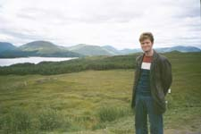
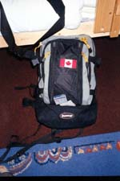

Paris, Calais, Dover, London (2000-07-13) Day
29
| From
Barcelona, switch trains in south France and again in Paris (taste the
Paris Metro again), a train to Calais for a Ferry to Dover (The castle
looking grand above the white cliffs), a train to London (a fresh Metro
to sample), and a train to Edinburgh. Total traveling time: 31.5 hours.
(I started reading Ryan's copy of Dune. He's still reading it, we cut the
book.) Arrival time in Edinburgh: 12:03 AM. Arrival time at bread and breakfast:
1:06 AM. (Someone (not me) had a problem reading the map...) |
Edinburgh (2000-07-14) Day 30
| Scotland
has had a wonderful first impression on me. I've decided to go `Lux, and
have booked a three day tour of the Highlands. I spent the day touring
Edinburgh and saw many wonderful things. I learned quite a bit about whiskey
(but only had one drink of it, rather harsh stuff if you ask me). The architecture
and history of this city is also very fascinating, I enjoyed the bus tour
quite a bit. Ryan and I split ways today, he is heading down to London
on a train this very moment. |
Isle of Skye (2000-07-16) Day 32
| My
three-day tour to the Isle of Skye has been fantastic! The highlands of
Scotland are wonderful, and a freak of weather has produce three wonderfully
clear sunny days here (not the usual). I've had a good refreshing fill
of mountains, sheep, hiking, and the local beer [Tennent's Velvet, Guiness,
Stella, & beer made from Heather] & whiskey (the whiskey is a bit
strong for my taste though). |
| I've
been traveling with a good Swiss friend I met, Reto Ackermann. He plays
a mean mouth organ (harmonica) =) Up on the Isle we met Susanna from Berlin.
She asks people what they think of Berlin and they say it's 'Interesting'.
We found that common description interesting too. ;)
I've
also been filling up on the local soft drink, IRN-BRU (contains Iron).
I was also woken up by a little dog when sleeping in the grass one day.
I've been going wow wow a lot (It's a dog's Bellen [Bark, in English])
And I've been told the meaning of the name of the first Dackel [sausage
dog] I knew, 'Schatzi'. It is something a fine girlfriend would be called,
similar to 'sweetheart' or 'cutie'.
|
I saw the Castle used in the Highlander film [Eilean
Donan Castle], and climbed around the rocks and gardens of the real Clan
MacCloud. I chased sheep down a mountain near the old man of Storr [rock
formation], and took a boat about on Loch Ness. All this was so far north
the sun lit the sky brightly until 10:30.
|
Now, back in Prague I had
my toes painted by Julie. In Cannes I guy working in the kitchen recognized
me by my feet, saying, "ahh, I knew it was you Vince, because you paint
your toenails." |
| We also noticed that many Canadian's make
sure you know they're not "American", by prominently displaying their flag...
It really stuck out. |
 |
|